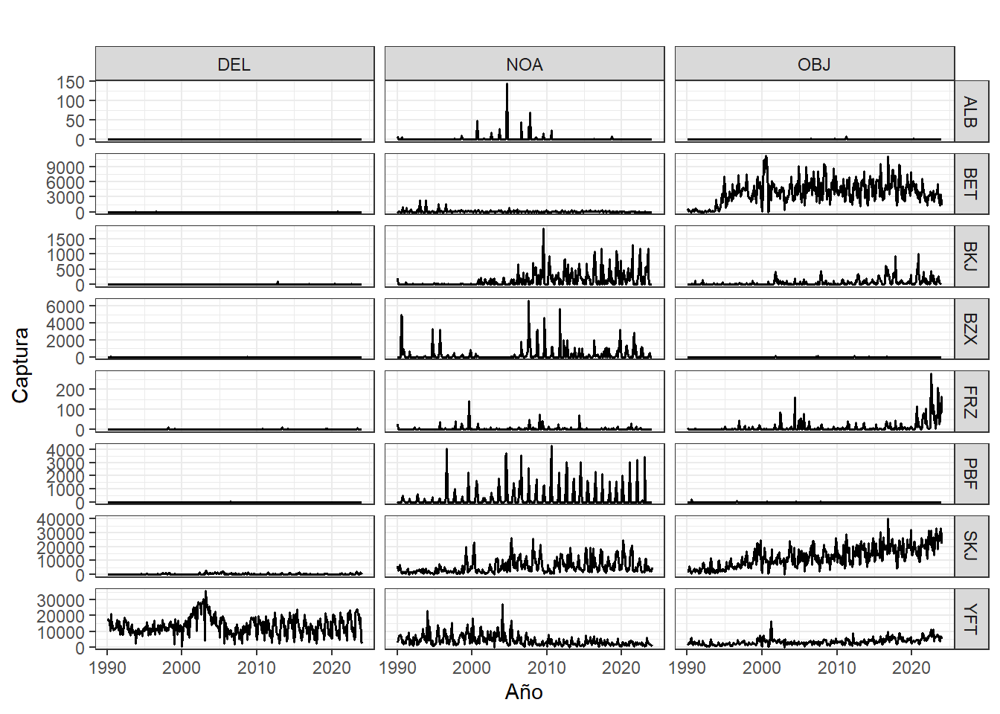
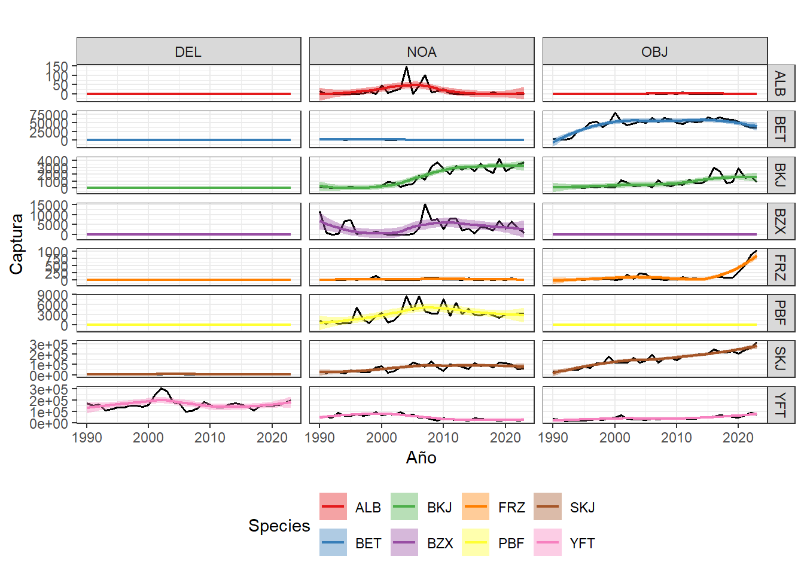

used (Mb) gc trigger (Mb) max used (Mb)
Ncells 589204 31.5 1314718 70.3 589204 31.5
Vcells 1075895 8.3 8388608 64.0 1075895 8.3
knitr::opts_chunk$set(echo =TRUE, # Mostrar código en el informewarning =FALSE, # No mostrar advertenciasmessage =FALSE, # No mostrar mensajesfig.align ="center"# Centrar las figuras)library(visdat); library(dplyr); library(ggplot2)
Warning: package 'visdat' was built under R version 4.3.3
Warning: package 'dplyr' was built under R version 4.3.3
Attaching package: 'dplyr'
The following objects are masked from 'package:stats':
filter, lag
The following objects are masked from 'package:base':
intersect, setdiff, setequal, union
Warning: package 'ggplot2' was built under R version 4.3.3
library(tidyr); library(cowplot);
Warning: package 'tidyr' was built under R version 4.3.3
Warning: package 'cowplot' was built under R version 4.3.3
library(sf); library(rnaturalearth)
Warning: package 'sf' was built under R version 4.3.3
Linking to GEOS 3.11.2, GDAL 3.8.2, PROJ 9.3.1; sf_use_s2() is TRUE
Warning: package 'rnaturalearth' was built under R version 4.3.3
library(RColorBrewer)
Datos sobre captura de atunes por tipo de lance
Los archivos contienen datos sobre las capturas retenidas de atún realizadas por embarcaciones de cerco en el Océano Pacífico Oriental (OPO) durante el período 1990-2023. Estos datos fueron registrados por observadores a bordo en el mar o extraídos de los libros de registro de las embarcaciones cuando los datos de los observadores no están disponibles. Incluyen información sobre la captura, el número de lances, agregados por año, mes, tipo de lance, y por cuadrículas de 1°x1° de latitud/longitud.
Este gráfico muestra la distribución de las capturas totales de diversas especies de atún según el tipo de lance utilizado, …
datos_captura_SetType <- datos %>%group_by(Species, SetType) %>%summarise(total =sum(Catch, na.rm =TRUE), .groups ="drop")ggplot(datos_captura_SetType, aes(x = SetType, y = total, fill = Species)) +geom_bar(stat ="identity", position ="dodge", col =1) +facet_wrap(~SetType, scales ="fixed") +labs(title ="", x ="", y ="Captura") +scale_fill_brewer(palette ="Set1", direction =-1, name ="Especies") +theme_bw()
Captura total por tipo de lance y especie
Series temporales
Captura mensual por tipo de lance y especie
datos <- datosSet %>%filter(Species !="TUN")datos_captura <- datos %>%group_by(Species, SetType, Year, Month) %>%summarise(Catch_total =sum(Catch, na.rm =TRUE), Lances_total =sum(NumSets, na.rm =TRUE), .groups ="drop")datos_captura$Year.dec <- datos_captura$Year + (datos_captura$Month/12 )datos_captura$Year <-factor(datos_captura$Year, levels =1990:2023)datos_captura$Month <-factor(datos_captura$Month, levels =1:12)ggplot(datos_captura, aes(x = Year.dec, y = Catch_total, color = Species, fill = Species)) +geom_line(size =0.7, shape =16, col =1) +# geom_smooth(method = "lm", se = TRUE, aes(group = Species)) +facet_grid(Species ~ SetType, scales ="free_y") +labs(title ="", x ="Año", y ="Captura") +scale_color_brewer(palette ="Set1") +scale_fill_brewer(palette ="Set1") +theme_bw() +theme(legend.position ="bottom")

Serie mensual de la captura por tipo de lance y especie
Captura anual por tipo de lance y especie
datos_captura <- datos %>%group_by(Species, SetType, Year) %>%summarise(Catch_total =sum(Catch, na.rm =TRUE), Lances_total =sum(NumSets, na.rm =TRUE), .groups ="drop")ggplot(datos_captura, aes(x = Year, y = Catch_total, color = Species, fill = Species)) +geom_line(size =0.7, shape =16, col =1) +geom_smooth(method ="loess", se =TRUE, aes(group = Species), linewidth =0.8 ) +facet_grid(Species ~ SetType, scales ="free_y") +labs(title ="", x ="Año", y ="Captura") +scale_color_brewer(palette ="Set1") +scale_fill_brewer(palette ="Set1") +theme_bw() +theme(legend.position ="bottom")

Serie anual de la captura por tipo de lance y especie